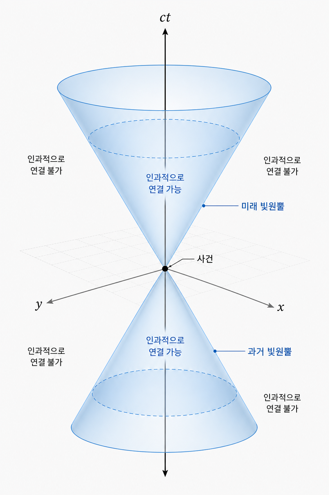

제4장: 시공간의 군론 — 로렌츠와 변하지 않는 틀
1. 절대적 시간은 환상인가?
우리는 제1장에서 시간의 평행이동 대칭이 에너지 보존과 이어진다는 사실을 보았습니다. 그런데 특수 상대성 이론은 여기서 한 걸음 더 나아갑니다. 시간 자체가 누구에게나 같은 절대적 배경이 아니라, 관측자의 운동 상태에 따라 공간과 뒤섞여 보인다는 것입니다. 그렇다면 질문은 이렇게 바뀝니다. "시간과 공간이 서로 섞여 버리는데도, 물리 법칙의 형태는 어떻게 유지되는가?"
아인슈타인의 답은 놀랍도록 기하학적입니다. 물리 법칙이 보존해야 하는 것은 뉴턴식의 절대 시간이나 절대 길이가 아니라, 시공간 간격이라는 더 근본적인 양입니다. 즉, 좌표는 바뀌어도 법칙이 붙잡고 있는 불변량이 따로 있습니다. 뇌터의 정리가 살아남는 이유도 여기에 있습니다. 보존 법칙은 "아무 변화도 없다"에서 나오지 않고, 어떤 종류의 변환 아래에서도 구조가 유지된다는 사실에서 나옵니다.
이때 상대성 이론이 우리에게 요구하는 가장 큰 태도 변화는, "언제"와 "어디"를 따로 떼어 생각하는 습관을 버리는 것입니다. 물리학에서는 어떤 일이 일어났는지를 하나의 사건(event)으로 보고, 그 사건을 시공간 위의 한 점으로 나타냅니다. 서로 다른 관측자는 그 점에 서로 다른 좌표를 붙일 수 있지만, 사건 자체가 사라지는 것은 아닙니다. 즉, 상대성 이론은 모든 관측자가 같은 숫자를 읽어야 한다고 말하는 이론이 아니라, 숫자가 바뀌더라도 같은 현실을 기술하는 법칙이 무엇인가를 묻는 이론입니다.
이 감각을 가장 잘 보여 주는 그림이 빛원뿔(light cone)입니다. 한 사건에서 출발한 빛은 시공간 위에서 원뿔 모양의 경계를 만듭니다. 그 경계 안에 있는 사건은 원인과 결과로 연결될 수 있고, 바깥에 있는 사건은 그럴 수 없습니다. 시간 지연이나 길이 수축 같은 유명한 효과들은 결국 이 더 깊은 구조, 즉 인과관계를 보존하는 시공간의 기하학에서 나온 결과입니다. 상대성 이론은 시간을 이상하게 비틀어 놓은 이론이 아니라, 원인과 결과가 가능한 방식 자체를 더 엄밀하게 다시 쓴 이론입니다.
2. 로렌츠 군(Lorentz Group)의 탄생
특수 상대성 이론에서 사건은 4차원 좌표 $(ct, x, y, z)$로 표시됩니다. 여기서 중요한 것은 보통의 유클리드 길이가 아니라
라는 민코프스키 간격입니다. 로렌츠 변환은 바로 이 양을 보존하는 좌표 변환입니다. 즉, 서로 다른 관성계의 관측자들은 시간과 공간 좌표값에는 동의하지 않을 수 있지만, 이 간격의 값에는 동의합니다.
이 변환들의 집합이 바로 로렌츠 군입니다. 느슨하게 말하면 이는 공간 회전과 부스트(boost), 즉 속도 변화에 따른 좌표 변환을 하나의 틀에 묶은 군입니다.
SO(3)는 우리가 익숙한 3차원 공간 회전의 대칭입니다.- 로렌츠 군은 여기에 시간축과 공간축이 섞이는 변환까지 포함합니다.
핵심은 이것입니다. 뉴턴 역학에서는 회전과 속도 변화가 서로 상당히 다른 성격의 변환처럼 보입니다. 하지만 특수 상대성 이론에서는 둘 다 시공간 위에서 허용되는 대칭 변환의 일부입니다. 회전이 공간 좌표끼리 섞는 변환이라면, 부스트는 시간과 한 공간축을 서로 섞는 변환입니다. 시공간을 하나의 무대로 보는 순간, 둘은 같은 군의 서로 다른 얼굴이 됩니다.
이 점을 조금 더 실감나게 보자. 일상적인 회전에서는 $x$축과 $y$축이 섞입니다. 하지만 부스트에서는 예를 들어 $ct$와 $x$가 함께 섞입니다. 따라서 한 관측자에게는 동시에 일어난 두 사건이, 다른 관측자에게는 동시에 일어나지 않을 수 있습니다. 이것이 바로 동시성의 상대성입니다. 상대성 이론이 낯설게 느껴지는 가장 큰 이유도 여기에 있습니다. 우리가 너무 오랫동안 시간은 모두에게 같은 흐름이라고 믿어 왔기 때문입니다.
그러나 수학적으로 보면 오히려 상황은 더 단순해집니다. 좌표값은 흔들릴 수 있지만, 민코프스키 간격은 흔들리지 않습니다. 그래서 물리학자는 각 관측자의 숫자를 붙잡기보다, 어떤 양이 군 전체 아래에서 불변인지 찾으려 합니다. 여기서도 다시 대칭성이 계산과 직관의 중심이 됩니다.

실제로 $x$축 방향 부스트는 대략
처럼 씁니다. 여기서 $\gamma = 1/\sqrt{1-v^2/c^2}$입니다. 식 자체는 낯설 수 있지만, 독자가 꼭 붙잡아야 할 사실은 하나입니다. 공간 좌표와 시간 좌표가 따로 변하지 않고 함께 섞인다는 것입니다. 상대성 이론의 모든 낯선 효과는 사실 이 한 줄에서 줄줄이 흘러나옵니다.
이 소절은 반드시 그림과 함께 읽히는 편이 좋습니다. 정지한 관측자의 좌표축과 움직이는 관측자의 좌표축을 같은 시공간 도표 위에 그려 보면, "왜 시간이 기울어지는가", "왜 동시성이 깨지는가", "왜 빛원뿔만이 모두에게 공통의 경계인가"가 말보다 훨씬 빨리 들어옵니다.
2.5 사건도표로 읽는 시간 지연과 동시성
이제 이 기하학이 실제로 어떤 경험으로 나타나는지 가장 유명한 장면으로 들어가 보자. 정지한 관측자에게는 똑딱똑딱 움직이는 빛시계 하나가 있다고 하겠습니다. 빛이 두 거울 사이를 위아래로 오가며 한 번 왕복할 때마다 한 틱이 지난다고 합시다. 그 시계를 들고 기차가 지나가면, 기차 안의 관측자에게 빛은 여전히 위아래로만 움직입니다. 하지만 플랫폼 위의 관측자에게는 상황이 다릅니다. 기차가 앞으로 움직이는 동안 빛도 함께 옆으로 이동하므로, 빛은 대각선 경로를 따라 더 긴 거리를 가야 합니다.
여기서 상대성 이론의 핵심이 드러납니다. 빛의 속도는 누구에게나 같아야 하므로, 더 긴 경로를 같은 속도로 움직인다면 플랫폼 관측자에게는 그 한 틱이 더 긴 시간으로 읽혀야 합니다. 이것이 시간 지연입니다. 사건도표로 보면 기차 안 시계의 두 틱은 같은 세계선 위에서 찍힌 두 사건이고, 움직이는 관측자의 좌표축에서는 그 사이 간격이 더 길게 읽힙니다. 즉, 시간 지연은 시간이 느슨하게 늘어난다는 마술이 아니라, 같은 두 사건 사이의 간격을 서로 다른 기준계가 다르게 분해하는 방식입니다.
길이 수축도 같은 구조의 다른 얼굴입니다. 정지한 막대의 양 끝을 "같은 시각"에 재서 길이를 정의하려면, 먼저 어떤 기준계에서 같은 시각인지가 정해져야 합니다. 그런데 앞서 본 것처럼 동시성 자체가 관측자에 따라 달라집니다. 한 기준계에서 막대의 앞뒤 끝을 동시에 찍은 두 사건은, 다른 기준계에서는 동시에 일어나지 않을 수 있습니다. 그래서 움직이는 막대의 길이를 재는 일은 단순히 자를 갖다 대는 문제가 아니라, 어떤 두 사건을 같은 시각의 측정으로 묶을 것인가의 문제입니다.
이 점이 바로 동시성의 상대성입니다. 플랫폼 양끝에서 동시에 번개가 친다고 해 보자. 플랫폼 가운데 정지한 관측자에게는 두 빛이 동시에 도달할 수 있습니다. 하지만 오른쪽으로 움직이는 기차 안 관측자는 앞쪽 번개 쪽으로 다가가고, 뒤쪽 번개에서는 멀어지고 있으므로 두 신호를 같은 방식으로 받지 않습니다. 여기서 중요한 것은 "누가 먼저 봤는가"만이 아닙니다. 두 번개 사건을 연결하는 동시성의 평면 자체가 관측자마다 기울어진다는 사실입니다. 사건도표에서 움직이는 관측자의 시간축과 공간축이 기울어지는 이유도 바로 여기에 있습니다.
상대성 이론을 처음 배울 때 가장 헷갈리는 대목은 시간 지연, 길이 수축, 동시성 상대성을 서로 따로 외우게 된다는 점입니다. 하지만 사건도표의 언어로 보면 이 셋은 별개의 효과가 아닙니다. 모두 같은 로렌츠 기하학의 다른 그림자입니다. 시간 지연은 시간축의 분해 방식에서, 길이 수축은 동시성의 정의에서, 동시성의 상대성은 좌표축의 기울기에서 나옵니다. 한 장의 시공간 도표를 제대로 읽을 수 있다면, 이 세 현상은 한꺼번에 이해되기 시작합니다.
3. 양자역학과의 조우: 스피너(Spinor)와 SU(2)
양자역학으로 넘어오면 이야기는 더 흥미로워집니다. 입자의 상태는 단순히 위치만으로 정해지지 않고, 회전에 대해 어떻게 변하는지도 함께 규정되어야 합니다. 여기서 회전군 SO(3)의 표현론이 다시 등장합니다. 정수 스핀뿐 아니라, 고전적으로는 상상하기 어려운 반정수 스핀 상태가 양자역학에서는 자연스럽게 나타납니다.
이때 중요한 군이 SU(2)입니다. SU(2)는 3차원 회전군 SO(3)의 이중덮개(double cover)로 작용하며, 전자 같은 스핀 1/2 입자의 상태를 기술하는 데 꼭 필요합니다. 그래서 스핀은 "작게 도는 구슬" 같은 고전적 그림으로 이해되기보다, 회전에 대한 양자 상태의 변환 법칙으로 이해하는 편이 더 정확합니다.
이 대목은 물리덕후들이 특히 좋아하는 부분이기도 합니다. 어떤 물체를 $360^\circ$ 돌리면 제자리로 돌아온다고 우리는 배웠습니다. 그런데 스핀 1/2 상태는 양자역학적으로는 조금 더 기묘합니다. 상태벡터 자체는 $360^\circ$ 회전 뒤 부호가 바뀔 수 있고, $720^\circ$를 돌아야 완전히 원래 모습으로 돌아옵니다. 물론 관측 가능한 확률은 이 부호 하나에 직접 반응하지 않지만, 이런 현상은 스핀이 고전적 회전 개념으로는 완전히 포착되지 않는다는 사실을 강렬하게 보여 줍니다.
그래서 스피너는 수식으로만 배우면 오히려 더 멀어집니다. 실을 꼬아 돌리는 디랙의 벨트 트릭(Dirac belt trick)이나 접시 돌리기 비유를 한 번 보면, 왜 $720^\circ$가 특별한지 감각적으로 이해할 수 있습니다. 물론 그런 시각적 비유가 수학 자체를 대체할 수는 없지만, 적어도 스핀 1/2가 "이상한 공식의 부산물"이 아니라 공간 회전과 더 미묘하게 얽힌 구조라는 점은 훨씬 잘 드러납니다.
상대론까지 포함하면 구조는 더 넓어집니다. 정확한 수학적 표현으로는, 로렌츠 군의 연속 성분은 SL(2,C)와 밀접하게 연결되어 있고 스피너는 그 표현으로 기술됩니다. 여기서 독자가 반드시 붙잡아야 할 요점은 복잡한 군 이름이 아니라 다음 사실입니다. 시공간의 대칭을 양자 상태에 구현하려고 하면, 스핀과 스피너라는 개념이 필연적으로 등장한다는 것입니다.
SO(3)와 SU(2) 관계 개념도디랙(Dirac)의 업적은 바로 여기에 있습니다. 그는 슈뢰딩거 방정식만으로는 상대론과 양자역학을 동시에 만족시키기 어렵다는 점을 보고, 시간과 공간 미분을 대칭적으로 다루는 새로운 방정식을 찾았습니다. 그 결과 전자의 스핀 1/2 성질이 자연스럽게 포함되는 디랙 방정식이 등장했고, 더 나아가 반입자의 존재까지 예고하게 되었습니다.
이것은 물리학의 아름다운 승리입니다. 원래는 "전자의 스핀"과 "상대론적 일관성"이 별개의 요구처럼 보였지만, 디랙 방정식 안에서는 둘이 하나의 구조 속에 묶입니다. 다시 말해 스핀은 억지로 추가한 양자 숫자가 아니라, 상대론적 양자이론이 스스로 요구하는 결과로 나타납니다. 이 장면에서 물리학자는 대칭성이 단순한 분류 도구를 넘어, 어떤 존재가 세상에 있을 수 있는가를 제한하는 법칙이라는 사실을 실감하게 됩니다.
4. 에피소드: 디랙의 방정식과 '부정적인 에너지'
디랙이 세운 방정식은 아름다웠지만, 처음에는 불편한 결과를 하나 함께 내놓았습니다. 상대론적 에너지-운동량 관계
를 반영하다 보니, 해를 구할 때 양의 에너지뿐 아니라 음의 에너지 해도 함께 나타난 것입니다. 많은 사람에게 이것은 방정식이 잘못되었다는 신호처럼 보였습니다. 하지만 디랙은 수학적 구조를 섣불리 버리지 않았습니다. 그는 이 음의 에너지 해가 어떤 새로운 물리적 실체를 가리키는지 진지하게 고민했습니다.
물론 오늘날 우리는 반입자를 디랙의 초기 해석 그대로 이해하지는 않습니다. 그러나 중요한 것은 방향입니다. 상대론적 대칭성과 양자역학을 동시에 만족시키려는 시도가, 결과적으로 전자만이 아니라 그 짝인 양전자까지 시야에 들어오게 만들었습니다. 이후 양전자의 발견은 "아름다운 수학적 구조가 실제 자연을 앞질러 갈 수 있다"는 물리학의 대표적 사례가 되었습니다.
여기서 독자가 한 번쯤 멈춰 생각해 볼 만한 점이 있습니다. 물리학에서 좋은 이론은 언제나 "상식적"인 이론이 아닙니다. 오히려 좋은 이론은 처음에는 상식을 불편하게 만들고, 나중에는 상식을 다시 교육합니다. 디랙 방정식은 바로 그런 경우였습니다. 음의 에너지 해는 처음엔 불쾌한 찌꺼기처럼 보였지만, 결국 자연은 그 찌꺼기가 아니라 우리의 직관 쪽이 틀렸다고 말했습니다.
반입자의 발견은 단지 새로운 입자 하나가 추가된 사건이 아닙니다. 그것은 수학적 대칭의 요구를 끝까지 밀어붙였을 때, 자연이 인간의 직관보다 더 정교한 방식으로 자신을 드러낼 수 있다는 사실을 보여 준 사건입니다. 이 책 전체를 관통하는 주제도 사실 여기에 있습니다. 대칭은 예쁜 형식이 아니라, 아직 보지 못한 현실을 예고하는 구조이기도 하다는 것 말입니다.
5. 이 챕터를 마치며
이제 우리는 대칭의 사다리를 한 단계 더 올라왔습니다. 제1장에서 보존 법칙의 뿌리를 보았고, 제2장에서 대칭의 문법을 익혔고, 제3장에서 그것이 양자 상태를 분류하는 언어가 되는 장면을 보았습니다. 그리고 지금, 그 언어가 원자 내부를 넘어 시공간 자체를 기술하는 수준까지 확장되는 모습을 확인했습니다.
다음 제5장에서는 무대를 다시 바꾸어, 공간과 시간의 대칭이 아니라 내부 대칭성(internal symmetry)으로 들어가겠습니다. 이번에는 좌표를 돌리는 것이 아니라, 전하와 색 같은 보이지 않는 자유도를 변환하는 대칭이 중심이 됩니다. 표준 모형이라는 거대한 구조물은 바로 그 대칭 위에 세워져 있습니다.